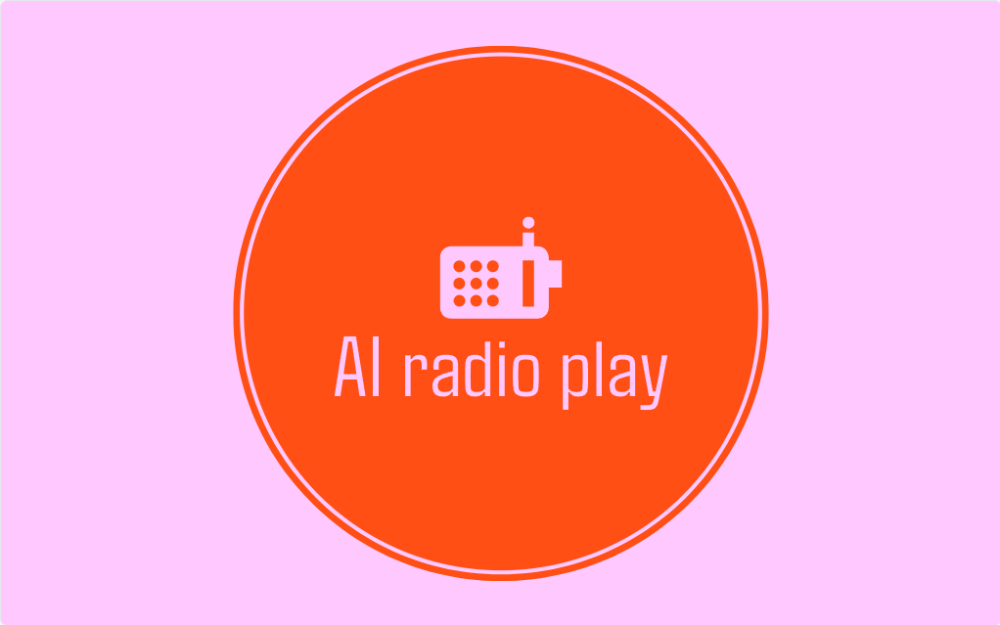

ZKM | Karlsruhe · ARD Hörspieltage 2024

Voice Box is an interactive installation that merges artificial intelligence, voice-cloning technology, and generative storytelling to create personalized Radio Plays. At the intersection of human expression and machine authorship, the work invites visitors to experience the uncanny sensation of hearing themselves perform in AI-generated radio plays.
Participants step into a recording booth equipped with microphones and a screen interface. Visitors record a short vocal sample, typically 30–60 seconds of text or spontaneous speech, which becomes the raw material for the generative process. People then choose a genre for the radio play they would like to listen to.
Within minutes, participants listen to an AI-generated radio drama featuring their own voice acting out characters, emotions, and dialogue. Through the process of researching and working on this installation I found that although people have a right to their own faces and images, individuals currently do not legally own their voice. Keeping with data protection laws we deleted the recordings and generated audio file immediately.
The system combines voice cloning, real-time narrative generation using transformer-based language models.
Voice Box explores authorship, identity, and the emotional weight of synthetic voices.